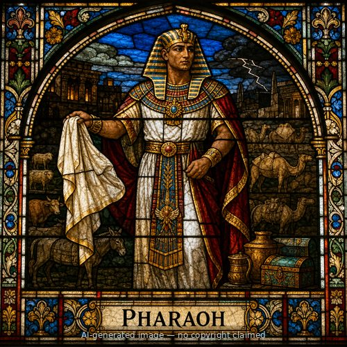
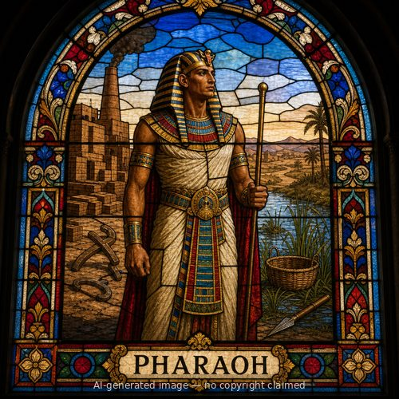
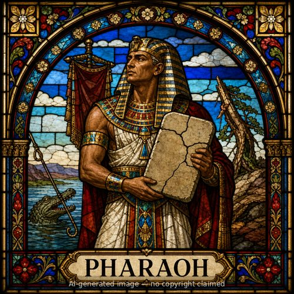

Pharaoh (M)
First named in Exodus 3:10-19
This Pharaoh took the throne after his predecessor's death (Exodus 2:23) and became the central figure God worked through to redeem Israel from slavery. When Moses and Aaron demanded, "Let My people go," Pharaoh refused and increased Israel's labor instead (Exodus 5:1-9). Ten plagues followed -- blood, frogs, gnats, flies, livestock death, boils, hail, locusts, darkness, and finally the death of every Egyptian firstborn -- as Pharaoh repeatedly refused Moses' demand, sometimes offering partial concessions before reneging (chapters 7-10). Scripture says both that Pharaoh hardened his own heart and that the LORD hardened it (8:15; 9:12), a tension the text states without resolving. After the tenth plague killed his own son along with every firstborn in Egypt, a broken Pharaoh finally drove Israel out in the night (12:29-33). He then changed his mind, pursued Israel with chariots, and trapped them at the Red Sea -- only to watch the sea part for Israel and then collapse over his own army, destroying it completely (14:5-28). Later Scripture returns to this Pharaoh repeatedly as the paradigm case of God's power over the proudest earthly ruler: God raised him up "to demonstrate My power in you, and that My name might be proclaimed throughout the whole earth" (9:16, quoted in Romans 9:17), and Israel's exodus from under his hand became its defining story of redemption, recalled for generations (Deuteronomy 6:21-22; Psalm 136:15).
Thought for Today
Pharaoh's hardened heart and ten plagues proved that no power on earth can stand against God's will. Jesus holds that same power over every hardened heart, including ours.
References: Exodus 3:10-19; Exodus 4:21-22; Exodus 5:1-23; Exodus 6:1-30; Exodus 7:1-23; Exodus 8:1-32; Exodus 9:1-35; Exodus 10:1-28; Exodus 11:1-10; Exodus 12:29-30; Exodus 13:15-17; Exodus 14:3-28; Exodus 15:4-19; Exodus 18:4-10; Deuteronomy 6:21-22; Deuteronomy 7:8-18; Deuteronomy 11:3; Deuteronomy 29:2; Deuteronomy 34:11; 1 Samuel 2:27; 1 Samuel 6:6; 2 Kings 17:7; Nehemiah 9:10; Psalms 135:9; Psalms 136:15; Song of Solomon 1:9; Romans 9:17
Genealogy
Father
—Mother
—Spouse(s)
—Children
—Places
Other people named Pharaoh



